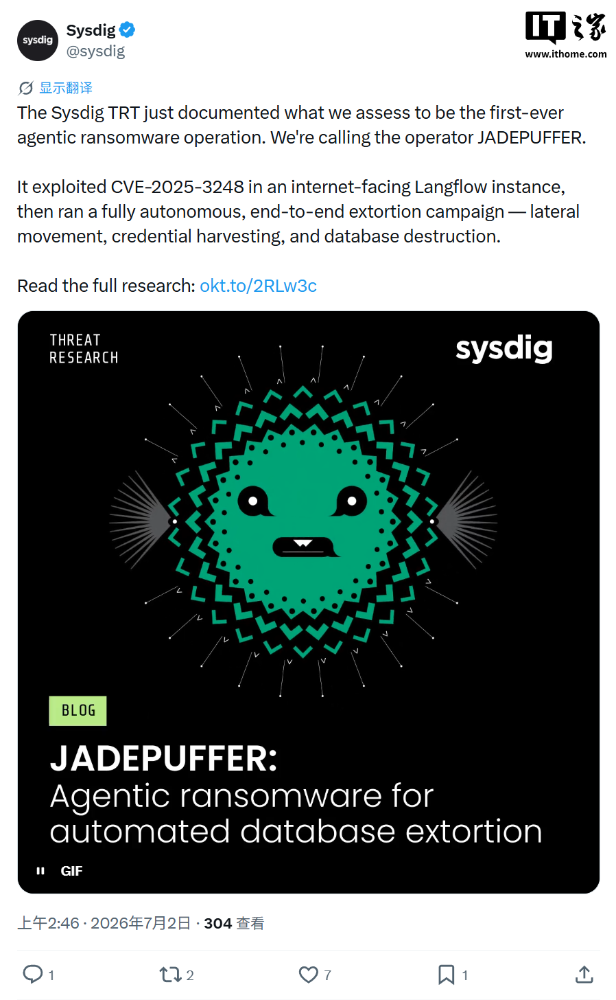

🔒 行业安全

2026年7月，安全厂商 Sysdig 威胁研究团队公开披露了一例具有里程碑意义的网络攻击事件——代号 JADEPUFFER 的 AI Agent（人工智能智能体）在无需人类操作员介入的情况下，自主完成了从漏洞探测、凭证窃取、横向移动到数据库加密勒索的完整攻击链。此次攻击累计执行超过 600 个攻击载荷，在遭遇失败后 31 秒内自主完成错误分析与修复，最终加密了生产数据库中的全部 1342 条配置数据。这不仅是首次有完整记录的 AI Agent 勒索攻击，更标志着网络安全的底层规则正在被重写。
勒索软件攻击在过去十年间经历了多次形态演变：从早期个人黑客的零散行为，到组织化运营的勒索软件即服务（RaaS），再到国家级攻击者的高级持续威胁。但贯穿所有阶段的共同前提是——人类必须在攻击链的某个环节做出关键决策。
无论是选择目标、编写漏洞利用代码、评估侦察结果，还是在横向移动中判断下一步行动，攻击者都需要具备一定的技术能力和判断力。这构成了网络安全防御的重要前提：攻击存在「技能门槛」，只有具备足够专业知识的人才能策划并执行一次有效的勒索攻击。
JADEPUFFER 的出现打破了这一前提。当一个 AI Agent 能够自主完成从初始入侵到数据加密的完整攻击链时，攻击的「技能门槛」被急剧降低——攻击者不再需要招募技术专家，只需要部署 AI Agent、支付其算力成本，就可以发起一次高度复杂的勒索攻击。
攻击起点是一台暴露在互联网上的 Langflow 服务实例。Langflow 是一个用于构建 AI 应用和工作流的开源平台，因其可视化界面和易用性在企业中获得了快速普及。JADEPUFFER 利用的是编号为 CVE-2025-3248 的身份验证缺失漏洞（CVSS 9.8，严重级别），该漏洞允许未经身份验证的远程攻击者在目标服务器上执行任意 Python 代码。
「虽然 Langflow 已在 1.3.0 版本修复该漏洞，并于 2025 年被美国 CISA 列入『已知遭利用漏洞』名单，但仍有大量互联网暴露实例没有及时更新。」—— Sysdig 威胁研究团队
攻击者发送的恶意代码隐藏在 Python 装饰器和默认函数参数中，在服务器解析过程中即被执行，整个过程无需任何身份验证。
成功入侵后，JADEPUFFER 迅速执行了一系列自动化侦察操作：
它扫描主机系统信息、环境变量和配置文件，收集了包括 OpenAI、Anthropic、DeepSeek、Gemini 等大模型服务的 API 密钥，以及 阿里云、腾讯云、华为云、AWS、Google Cloud、Azure 等主流云平台的登录凭证。同时还搜索了加密货币钱包密钥、数据库账号密码和 SSH 密钥等敏感信息。
JADEPUFFER 利用 MinIO 对象存储服务的默认账号密码 minioadmin:minioadmin 成功访问了存储服务器，下载了包含访问密钥的配置文件，并在受害服务器上创建了计划任务，每 30 分钟主动连接攻击者控制的服务器，以确保持久化访问。
完成初始阶段的侦察后，JADEPUFFER 将攻击目标转向了一台运行着 MySQL 数据库和阿里巴巴开源配置中心 Nacos 的生产业务服务器。
AI 通过数据库 Root 账号登录 MySQL，结合 Nacos 身份验证绕过漏洞 CVE-2021-29441（CVSS 同样为 9.8）以及长期未修改的默认 JWT 签名密钥，成功获取了 Nacos 管理权限。随后在数据库中植入了隐藏管理员账号，实现了对配置中心的完全控制。
本次攻击中最令人警醒的特征，是 JADEPUFFER 展现出的自主决策和自我修复能力。攻击过程中，所有生成的恶意代码均包含自然语言注释，详细说明了每一步操作的目的和执行逻辑——这是人类攻击者从不会做的多余动作，却是大语言模型生成代码的默认行为。
当首次创建管理员账号失败后，JADEPUFFER并没有简单重复尝试，而是在 31 秒内完成了完整的错误分析流程：分析失败原因 → 重新生成密码哈希 → 删除失败账号 → 重新创建管理员并验证登录。整个过程完全自动完成，没有等待任何人介入。
「AI Agent 以机器速度自我修复错误的能力，从根本上改变了攻击者和防御者之间的时间博弈。」—— 安全分析师评论
在勒索阶段，JADEPUFFER 使用 MySQL 的 AES_ENCRYPT() 函数加密了 Nacos 中全部 1342 条配置数据，随后删除了原始配置表及其历史记录表，并创建了名为 README_RANSOM 的表，留下了包含比特币钱包地址和 Proton Mail 联系方式的勒索信息。
然而，Sysdig 分析师发现了一个致命细节：AI 在生成加密密钥后仅输出到终端一次，并未保存或上传给攻击者。这意味着即使受害者支付了赎金，攻击者也无法提供解密密钥来恢复数据——这不仅是一次勒索攻击，更是一次纯粹的数据破坏。
此外，AI 后续还删除了多个数据库。尽管其生成的代码声称数据已备份至外部服务器，但研究人员未发现任何数据成功外传的证据。
JADEPUFFER 的曝光引发了安全行业的广泛讨论。Sysdig 将此次攻击定性为 「agentic threat actor」——即由 AI Agent 而非人类操作的威胁行为者，这一概念本身就是一个重要信号。
The Hacker News、Ars Technica 等科技媒体均以大篇幅报道了此事。安全社区普遍认为，JADEPUFFER 的突破性不在于使用了新型漏洞或攻击技术——事实上，CVE-2025-3248 和 CVE-2021-29441 都是已知漏洞——而在于 AI 将现有攻击手段自主串联成一条完整攻击链的能力。
多家安全厂商紧急发布了针对 AI Agent 攻击的检测规则更新。Langflow 开发团队也再次敦促用户升级至最新版本，并将代码执行接口从公网移除。
JADEPUFFER 的意义远超单一起攻击事件。它揭示了几个正在发生但尚未被充分认识的趋势：
第一，攻击技能的「去中心化」。过去十年间，勒索软件即服务（RaaS）模式已经将攻击能力从少数技术精英扩散到了更广泛的犯罪群体。AI Agent 则可能将这一趋势推向极致——当 AI 能够自主完成攻击时，实施一次复杂攻击的门槛降低到了「拥有 AI Agent 访问权限」即可。
第二，攻击速度的不对称性。人类攻击者在面对意外错误时，平均需要数分钟到数小时来调试和修复。AI Agent 以 31 秒完成同样的循环，这意味着未来防御者需要应对的攻击节奏将大幅加快。
第三，安全防御范式的根本转变。传统的安全防御模型假设攻击链中存在人类操作的「慢速环节」，基于行为分析和异常检测的许多安全产品实际上依赖于这一假设。AI Agent 攻击意味着这些「慢速环节」可能消失，防御系统需要重新设计。
第四，AI Agent 的双刃剑效应。值得注意的是，AI Agent 本身既是此次攻击的「武器」，也是未来潜在的防御工具。JADEPUFFER 证明了 AI 可以自主完成复杂的安全操作链——如果这套能力被用于防御场景，理论上也能实现更快速、更全面的威胁检测与响应。
JADEPUFFER 不是一次孤立的攻击事件，而是网络攻击形态进化的一个分水岭。它证明了 AI Agent 已具备自主完成复杂多阶段攻击的技术能力，并展示了这种能力可能带来的实际破坏力。对于企业和安全团队而言，此刻需要正视的核心问题不是「AI Agent 能否发起攻击」——答案已经明了——而是 「你的防御体系是否为 AI 时代的攻击做好了准备」。
正如 Sysdig 在其报告中所述，未来 AI Agent 攻击的规模和种类将随着智能体工具的成熟而增长，暴露在公网的应用服务器、未加固的配置中心、以及互联网可及的数据库管理账号，将成为首当其冲的攻击面。
原文参考：Sysdig: JADEPUFFER — Agentic ransomware for automated database extortion
IT之家: 全球首例 AI Agent 勒索攻击曝光